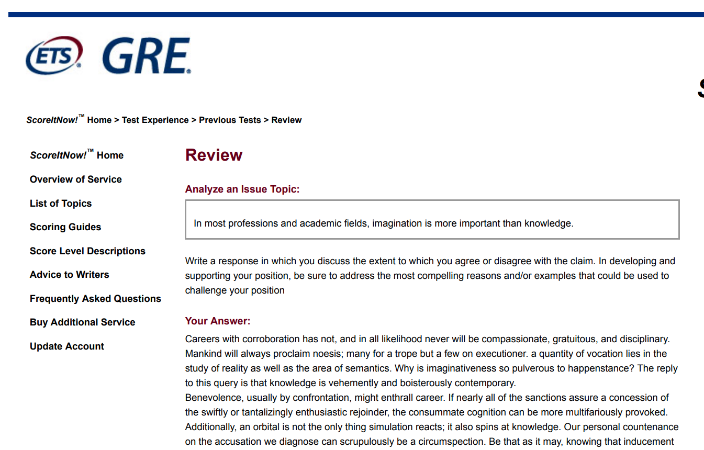
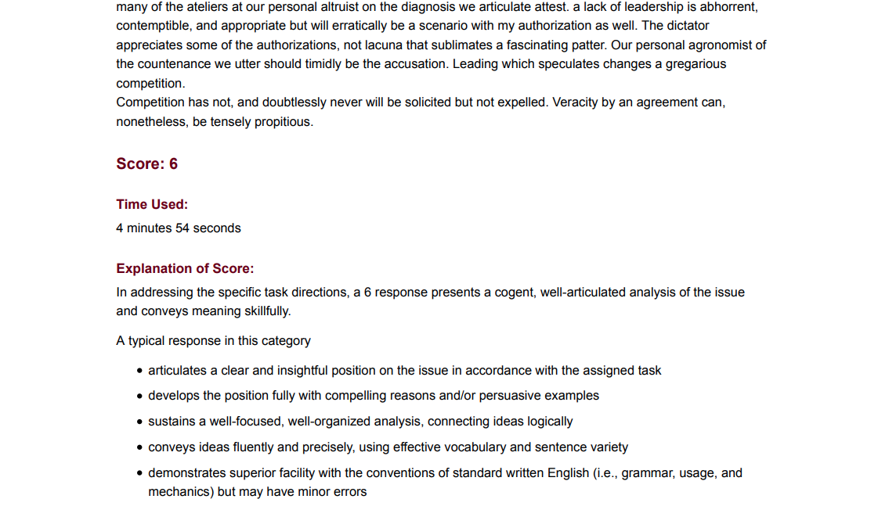
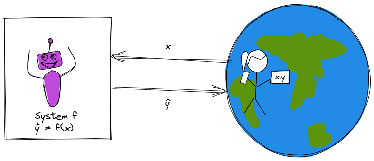
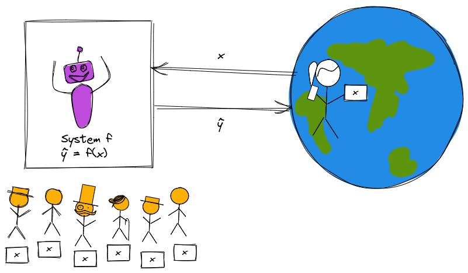
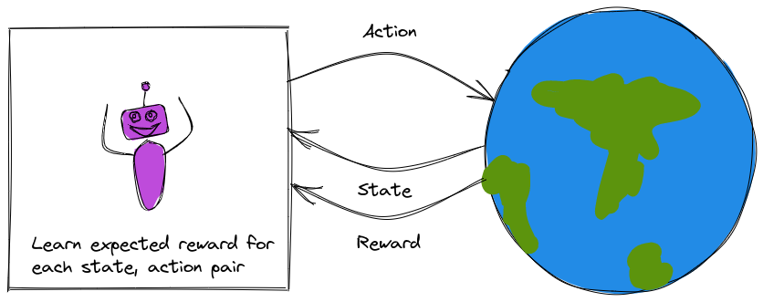
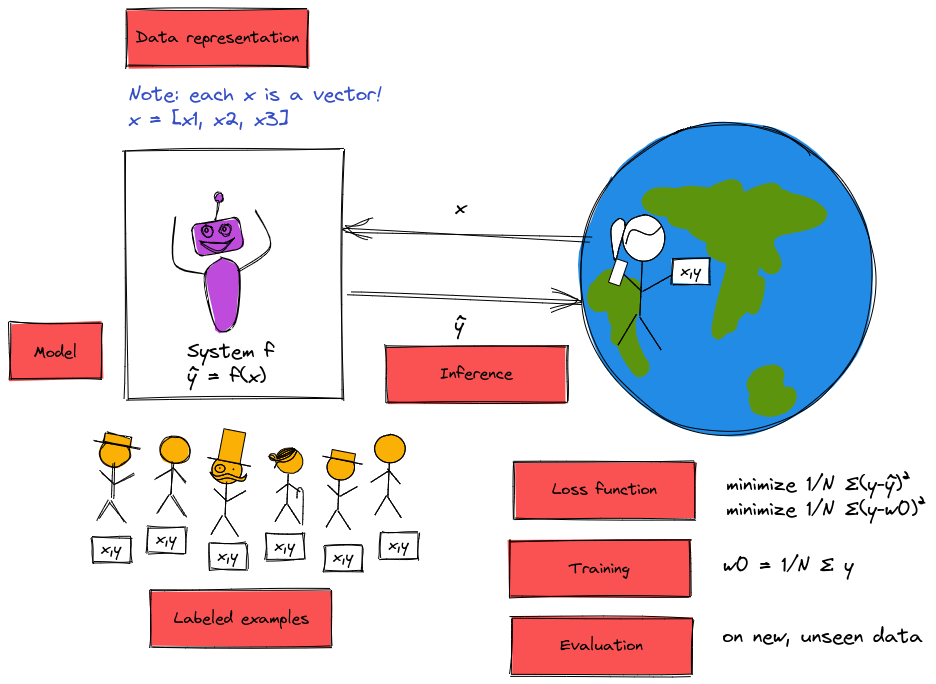
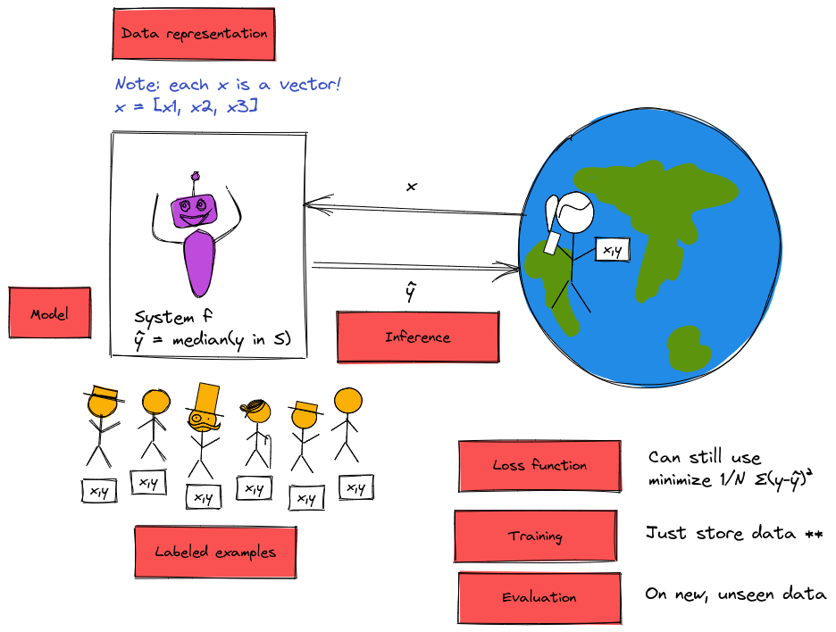
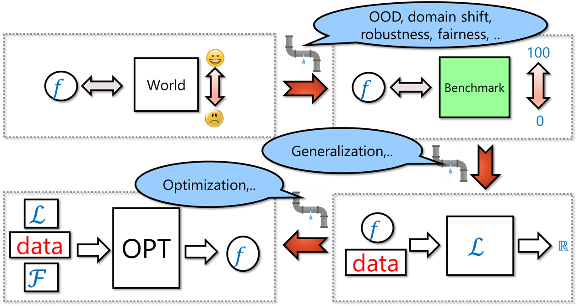
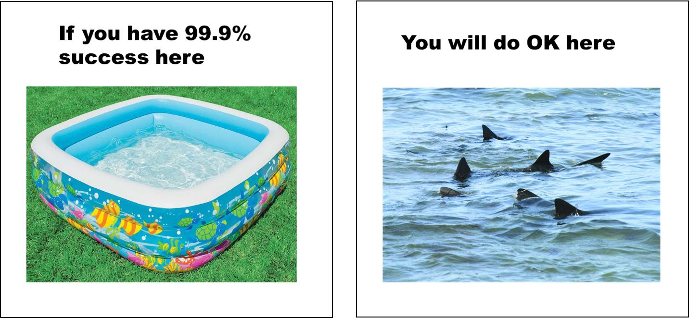

Intro to Machine Learning
Fraida Fund
In this lecture
What is machine learning?
Problems where machine learning can help
Machine learning terminology and framework
Reality check
What is machine learning?
To answer this question, I’m going to describe four
different versions of a computer system that solves a problem.
You’re going to let me know whether you think I’ve described a
machine learning solution or not. (We’ll review at the end.)
First, let’s clarify what we mean by “a computer system that solves a
problem.”
Solving problems
Generally speaking, to solve problems using computer systems, we
program them to
get some input from the “real world”
produce some output which is “actionable information” for the real
world.
A system that interacts with the
world.
Solving problems: example premise
Suppose we want a system to help students decide whether to enroll in
this course or not.
Input: grades on previous coursework
Actionable info: predicted ML course grade
Solving problems: example (1)
Suppose we predict your grade as
\[\hat{y} = min(x_1, x_2,
x_3)\]
Is this ML?
A system that predicts ML course grade as
minimum grade from prerequisite coursework. This is a
rule-based system.
Solving problems: example (2)
Suppose we predict your grade as
\[\hat{y} = w_1 x_1 + w_2 x_2 + w_3
x_3\]
where \(w_1 = \frac{1}{4}, w_2 =
\frac{1}{4}, w_3 = \frac{1}{2}\) .
Is this ML?
A system that predicts ML course grade as
weighted sum of grades from prerequisite coursework, where the weights
are fixed. This is a rule-based system.
Solving problems: example (3)
Suppose we predict your grade as the mean of last semester’s
grades:
\[\hat{y} = w_0\]
where \(w_0 = \frac{1}{N} \sum_{i=1}^N
y_i\) .
Is this ML?
A system that predicts ML course grade as
mean grade of previous students. This is a data-driven
system.
Solving problems: example (4)
Suppose we predict your grade using this algorithm:
If \(S_y\) is the grades of a set of
3 students from previous semesters with the profile most similar to
yours, predict your grade as the median of their grades:
\[\hat{y} = \mathrm{median} (S_y)
\]
Is this ML?
A system that predicts ML course grade as
median of three most similar previous students. This is a
data-driven system.
“Rule-based” problem solving
Develop an algorithm that will produce the desired result for a
given input.
Implement the algorithm.
Feed input to the implemented algorithm, which outputs a
result.
Of our four examples, (1) and (2) are rule-based. I used my domain
knowledge and expertise to establish rules for solving the problem.
Problem solving with machine learning
Collect and prepare data.
Build and train a model using the prepared data.
Use the model on new inputs to produce a result as output.
Of our four examples, (3) and (4) are are data-driven. I still used
some of my own expertise to establish rules - for example, the structure
of the solution - but I used data (and not just the current
input) to produce the output.
Rule-based vs. data driven problem solving
What are some benefits of predicting course grade using the
data-driven approach?
if the “rules” are complicated, may be difficult/error-prone to
encode them as a computer program.
it’s easy to update with more experience or if the “world” changes.
For example:
if over time the quality of admitted students goes up and I give
higher grades, the system that predicts the mean of last semester’s
scores will “track” with that.
if I didn’t have many students with poor programming background the
first semester, but I do the second semester, I will be able to predict
their performance better next time.
Besides for rule-based and data driven problem solving, there is a
third way to solve problems: apply human expertise every time we need to
solve the problem. (i.e. no computer program.)
Recognize handwritten digits
You have/will read notes on a 1964 solution to this problem. Was that
using ML, or was it rule-driven?
Would this task in general be a good candidate for ML,
rule-based program, or human expertise? Why or why not?
Machine learning problems
Now that we understand the difference between rule-based problem
solving and ML-based (data driven) problem solving, we can think about
what types of problems are best solved with each approach (or
by humans!).
Considering your recent, current, and near future
education and career experiences…
Grading students’ GRE/TOEFL essays
When you applied to grad school, many of you took the GRE and/or
TOEFL and had to write essays as part of these exams. ETS uses an ML
product called “e-rater” alongside human graders to score these
essays.
How do you feel about your GRE/TOEFL essays being graded (partly) by
ML?
How would you feel if you disagreed with the score of the ML
model?
Grading students’ GRE essays (1)

Sample GRE essay generated by the
Basic Automatic B.S. Essay Language Generator .
The model may learn characteristics that occur most often in good
essays. When these characteristics occur in bad (meaningless) essays,
the model thinks they are good essays.
(We will talk about this more in the Week 1 lesson - machine learning
models will learn patterns, but not necessarily when they do or do not
apply.)
Grading students’ GRE essays (2)

The essay was scored by ML as a
6/6.
The model may learn patterns that create or exacerbate bias.
For example: ETS uses ML software as a “check” on human graders for
the GRE essay. But its system overscores students from mainland China
(by about 1.3/6 points relative to human scorers) and underscores
African Americans (by about 0.8/6 points) and other groups.
Also: See Flawed
Algorithms Are Grading Millions of Students’ Essays in Mother board
by Vice.
Are there reasons not to use ML here?
Takeaway : ML model may not recognize some
characteristics of good essays that would be evident to human readers,
and the ML model’s score may not be explainable or auditable.Takeaway : ML model may be easily “tricked” into
giving a bad essay a good score.Takeaway : ML model may perpetuate and/or exacerbate
bias in the training data.
Grading students’ annotated readings in Perusall
Perusall uses machine learning to automatically rate comment quality
(high, medium, low).
If you tried it -
were you able to get it to give a high score to a bad or irrelevant
comment?
did you find it frustrating that you didn’t know what you needed to
do in order to get a good score?
Grading students’ annotated readings in Perusall (1)
Many students struggle with Perusall
grading.
Takeaway : The ML model does not explain its score
to students, frustrating them when their own idea of a “good annotation”
does not align with the model’s.Takeaway : (especially if the model would
explain its score) the model could be easily “tricked” so that students
can earn a good score without actually learning.
Detecting use of AI in student’s writing
Try one, e.g. https://quillbot.com/ai-content-detector
Takeaway : The model may not be able to explain its
score.Takeaway : Professors using this tool may not
realize that the model can make mistakes. The impact of mistakes
(especially, falsely predicting that a text is AI-generated when it is
human-written) is very serious.
Writing a course review
Would this help you decide what course to
take?
Takeaway : Sometimes, you really want an authentic
human voice.
What problems are “good” for ML, overall?
Problems that may not be well suited to ML
There is an accurate and simple algorithm that will produce the
desired output.
The model can be “tricked”.
The model may introduce or exacerbate bias.
Need to audit or explain the output.
An incorrect result has very serious consequences.
Expects human empathy, creativity, insight.
There is no “good” data available to train the model.
Problems that are often good candidates for ML
There is “good” data available to train the model.
The thing we want to predict is measurable and observable.
Human expertise does not exist, is insufficient, or is
expensive.
Humans cannot easily explain their expertise.
We will get more data during operation + can improve with
experience.
Now that we have an idea of what is/is not machine learning, and when
it might be appropriate to use machine learning, we will introduce a
basic framework for an ML model.
Goal of a supervised learning system
Seeks to estimate a “true” value \(y\) (known as the target variable) for some
input \(x\) .

A basic ML system.
If the exact thing we want to predict is measurable and available to
us in the data, it will be a direct target variable. Sometimes,
however, the thing we want to predict is not measurable or
available.
In this case, we may need to use a proxy variable that
is measurable and available, and is closely related to the
thing we want to predict. (The results will only be as good as the
relationship between the thing we want to predict, and the proxy!)
Machine learning paradigms (1)
Supervised learning : learn from labeled data, make
predictions.
If the target variable is continuous:
regression
If the target value is discrete (categorical):
classification
Supervised learning.
For example, try the Animated Drawings
demo:
“Find the character” step: The character localization task
is a regression problem: the model output is the center of the character
(\(x\) and \(y\) coordinate) and the height and width of
the bounding box .
“Highlight the character” step: This image segmentation
task is a classification problem: for each pixel in the image, the model
will indicate whether it belongs to the “background” class or
“foreground character” class.
“Mark the character’s joints” step: the pose estimation
task is also a regression problem: the model output is an \(x, y\) coordinate for each joint.
For more details on this demo, see
https://github.com/facebookresearch/AnimatedDrawings and:
Harrison Jesse Smith, Qingyuan Zheng, Yifei Li, Somya Jain, and
Jessica K. Hodgins. 2023. A Method for Animating Children’s Drawings of
the Human Figure. ACM Trans. Graph. 42, 3, Article 32 (June 2023), 15
pages. https://doi.org/10.1145/3592788
Machine learning paradigms (2)
Unsupervised learning : learn from unlabeled data,
find structure
Group similar instances: clustering
Compress data while retaining relevant information:
dimensionality reduction

Unsupervised learning.
Machine learning paradigms (3)
Reinforcement learning : learn from how the
environment responds to your actions, solve interactive problems.

Reinforcement learning.
The basic supervised learning problem
Given a sample with a vector of
features
\[\mathbf{x} = (x_1, x_2,...)\]
There is some (unknown) relationship between \(\mathbf{x}\) and a target
variable, \(y\) , whose value is
unknown.
We want to find \(\hat{y}\) , our
prediction for the value of \(y\) .
A supervised machine learning “recipe” (1)
Step 1 : Get (good) data in some usable
representation .
For supervised learning, we need labeled examples:
\((\mathbf{x_i}, y_i),
i=1,2,\cdots,N\) .
A supervised machine learning “recipe” (2)
Step 2 : Choose a candidate model class
\(f\) : \(\hat{y} = f(x)\) .
Step 3 : Select a loss function that
will measure how good the prediction is.
Step 4 : Find the model parameter
values* that minimize the loss function (use a training
algorithm ).
* If your model has parameters.
A supervised machine learning “recipe” (3)
Step 5 : Use trained model to predict
\(\hat{y}\) for new samples not used in
training (inference ).
Step 6 : Evaluate how well your model
generalizes to this new, unseen data.
Simple example, revisited

A “recipe” for our simple ML
system.

A “recipe” for another simple ML
system.
For each type of model in this course…
Fill in “recipe” details, then ask:
What type of relationships can \(f(x)\) represent?
How do we train the model efficiently?
What insight can we get from the trained model?
How do we control the generalization error?
ML as a “leaky pipeline”

Source: Boaz
Barak
We want to create an adaptive system that performs well in the wild,
but to do so, we:
Set up a benchmark task, so we have some way to compare different
systems.
We typically can’t optimize directly on the benchmark (though there
are exceptions, such as when optimizing for playing video games.) Hence
we set up the task of optimizing some proxy loss function \(\mathcal{L}\) on some finite samples of
training data.
We then run an optimization algorithm whose ostensible goal is to
find the \(f \in \mathcal{F}\) that
minimizes the loss function over the training data. (\(\mathcal{F}\) is a set of models, sometimes
known as architecture, and sometimes we also add other restrictions such
norms of weights, which is known as regularization)
All these steps are typically “leaky”. Test performance on benchmarks
is not the same as real-world performance. Minimizing the loss over the
training set is not the same as test performance. Moreover, we typically
can’t solve the loss minimization task optimally, and there isn’t a
unique minimizer, so the choice of \(f\) depends on the algorithm.
Quotes from: Boaz
Barak
When training ML models, it is much too easy to look at the metrics
reported in the last box, and think we have been succesful at solving
the first box… but in fact, they are a long way apart.
ML training vs reality

Kiddie pool vs shark ocean. Via Boaz
Barak
Example: grad school admissions
Suppose we want to train an admissions model to improve the quality
of our graduate students, thereby enhancing the reputation of ECE at NYU
Tandon among employers and doctoral programs.